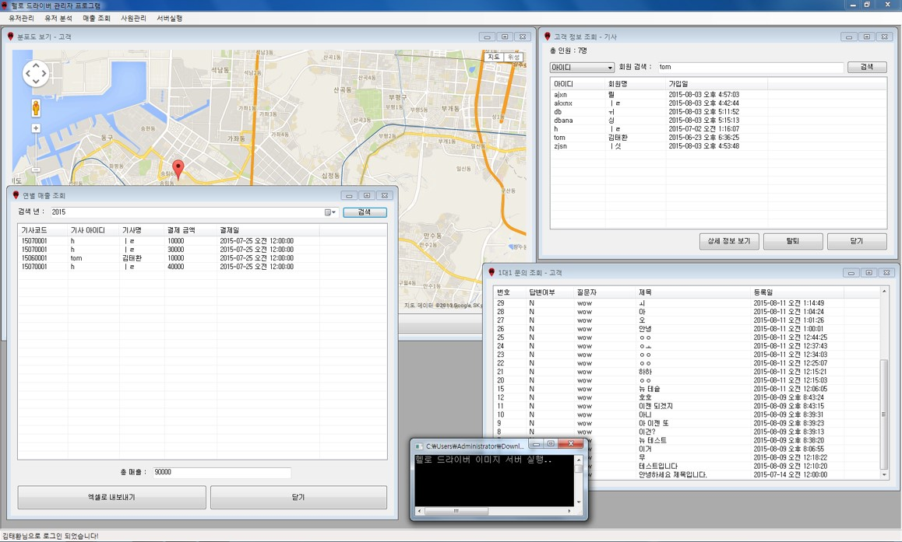

졸업작품 프로젝트로 대리운전 기사와 사용자를 엮어주는 시스템에 관한 프로젝트로 개인으로 진행하였습니다.
이 프로젝트에 적용된 기술은 아래와 같습니다.
앱 시연 영상을 통해 지도를 길게 클릭함으로 목적지 설정기능, 채팅 기능 그리고 가격흥정 기능 시연을 시청가능하며 이
앱의 기능은 고객평가, 매출 조회 그리고 History 조회기능등이 있습니다. 왼쪽이 사용자 오른쪽이 대리운전
기사입니다.
앱의 메인 액티비티를 출력할땐 슬라이드 메뉴 구현과 구글지도의 초기화를 위한 코드를 구현하였습니다.
// User의 메인화면
// Google Map API의 초기화, Custom 타이틀바 적용 코드
public class User_MainActivity extends Activity
{
// Google map과 GPS 초기화
public GoogleMap mapOnActivity; // Google map 객체
double Lat = 0; // 위도
double Lng = 0; // 경도
double distance = 0; // 기사 검색 범위
Location location;
LocationManager locationManager; // GPS로부터 위치를 조회하기 위한 객체
LocationListener locationListener;
Geocoder coder;
...
// Google map과 GPS 초기화 끝
// Custom 타이틀 바와 슬라이드 메뉴 초기화
ArrayList alist;
boolean menuOpen = false;
ListView menuList;
LinearLayout UserMenu;
ImageView menuBtn;
DataAdapter adapter;
Animation Open_Slider;
Animation Close_Slider;
DisplayMetrics deviceWidth;
int widthOfDevice = 0;
ProgressDialog sendMessageDialog;
String sentDriverID = null;
boolean matched = false;
Window win;
LayoutInflater inflater;
LinearLayout linear;
LinearLayout.LayoutParams paramlinear;
...
// Custom 타이틀 바와 슬라이드 메뉴 초기화 끝
@Override
protected void onCreate(Bundle savedInstanceState)
{
// Custom 타이틀 바와 슬라이드 메뉴 초기화
super.onCreate(savedInstanceState);
requestWindowFeature(Window.FEATURE_CUSTOM_TITLE);
win = getWindow();
win.setContentView(R.layout.activity_user__main);
getWindow().setFeatureInt(Window.FEATURE_CUSTOM_TITLE, R.layout.custom_title_bar);
titleTxt = (TextView) findViewById(R.id.destinationTxt);
titleTxt.setText("목적지를 설정해주세요");
deviceWidth = new DisplayMetrics();
getWindowManager().getDefaultDisplay().getMetrics(deviceWidth);
widthOfDevice = deviceWidth.widthPixels;
Open_Slider = AnimationUtils.loadAnimation(this, android.R.anim.slide_in_left);
Close_Slider = AnimationUtils.loadAnimation(this, R.anim.slide_out_left);
Open_Slider.setAnimationListener(new AnimationListener()
{
...
// Custom 타이틀 바와 슬라이드 메뉴 초기화 끝
// Map init
coder = new Geocoder(this, Locale.KOREA);
mapOnActivity = ((MapFragment) getFragmentManager().findFragmentById(R.id.userMap)).getMap();
locationManager = ((LocationManager) getSystemService(Context.LOCATION_SERVICE));
locationListener = new LocationListener()
{
@Override
public void onLocationChanged(Location locationOfGPS)
{
Lat = locationOfGPS.getLatitude();
Lng = locationOfGPS.getLongitude();
if (!firstInit)
{
CameraUpdate cameraUpdate = CameraUpdateFactory.newLatLngZoom(new LatLng(Lat, Lng), 17);
mapOnActivity.moveCamera(cameraUpdate);
Find_Driver DriverSpreader = new Find_Driver(Lat, Lng, userCon, getSharedPreferences("UserInfo", 0).getString("SearchRange", ""));
DriverSpreader.execute();
firstInit = true;
new DB_CustomerRollBack(userCon, getSharedPreferences("UserInfo", 0).getString("UserID", "")).execute();
new DB_GetMessage(userCon, getSharedPreferences("UserInfo", 0).getString("UserID", ""), 0).execute();
}
...
}
};
try
{
setListener();
}
catch (Exception ex)
{
Intent gpsOptionsIntent = new Intent(android.provider.Settings.ACTION_LOCATION_SOURCE_SETTINGS);
startActivityForResult(gpsOptionsIntent, 1);
Toast.makeText(getApplicationContext(), "GPS 설정을 무선 네트워크 사용에 체크해주세요!", 1000).show();
}
...
사용자가 지정한 범위내의 대리운전 기사를 조회하는 코드는 다음과 같습니다.
public class Find_Driver extends AsyncTask
{
double Lat;
double Lng;
Context exCon;
ArrayList LatList = new ArrayList();
ArrayList LngList = new ArrayList();
ArrayList IDList = new ArrayList(); // 기사의 ID
ArrayList genderList = new ArrayList(); // 사용자의 안전을 위해 사용자가 원하는 성별의 기사를 선택할 수 있도록 기사의 성별을 표시
String distance; // 사용자가 지정한 범위
public Find_Driver(double Lat, double Lng, Context exCon, String distance)
{
this.exCon = exCon;
this.Lat = Lat;
this.Lng = Lng;
this.distance = distance;
}
@Override
protected String doInBackground(String... params)
{
// TODO Auto-generated method stub
Double castedRange = 0.1; // 조회 범위
if(!distance.equals(""))
{
castedRange = Double.valueOf(distance).doubleValue() / 1000; // 기본 범위 설정
}
Connection conn = null; // Database 연결을 위한 컨넥션 객체 선언
PreparedStatement pre = null; // stmp 또는 pstmp를 선언하여 사용할 수 있다.
ResultSet rSet = null;
String Query;
try
{
Class.forName(dataStruct.DataStruct.Data.DBCLASS).newInstance();
conn = DriverManager.getConnection(dataStruct.DataStruct.Data.SERVER_DB_IP, dataStruct.DataStruct.Data.DBID, dataStruct.DataStruct.Data.DBPW);
Query = "SELECT Lat, Lng, ID, Gender FROM (SELECT inQuery.ID, Lat, Lng, Match, Class, Last_Refresh, Gender, ( 6371 * acos( cos( radians(" + Lat + ") ) * cos( radians( Lat ) ) * cos( radians( Lng ) - radians(" + Lng + ") ) + sin( radians(" + Lat
+ ") ) * sin( radians( Lat ) ) ) ) AS distance FROM User_State AS inQuery INNER JOIN Users AS outQuery ON inQuery.ID = outQuery.ID INNER JOIN Driver_Info AS Info ON Info.Driver_ID = outQuery.ID) AS a WHERE a.distance < " + castedRange + " AND a.Class = '1' AND a.match = '0' AND Last_Refresh > DATEADD(minute, -10, GETDATE());";
pre = conn.prepareStatement(Query);
rSet = pre.executeQuery();
while (rSet.next())
{
LatList.add(rSet.getDouble(1));
LngList.add(rSet.getDouble(2));
IDList.add(rSet.getString(3));
genderList.add(rSet.getString(4));
}
}
...
@Override
protected void onPostExecute(String result)
{
((User_MainActivity) exCon).mapOnActivity.clear();
for (int i = 0; i < LatList.size(); i++)
{
((User_MainActivity) exCon).showDriver(LatList.get(i), LngList.get(i), IDList.get(i), genderList.get(i)); // 조회된 기사 출력
}
}
}
기사와 사용자간의 통신은 TCP/IP로 구현하였으며 DB로부터 서로의 IP주소를 읽어와 전송하는
방식으로 구현하였습니다. 기사용 SocketOpner는 다음과 같습니다.
// 기사용 SocketOpner
public class DriverSocketOpener implements Runnable
{
Handler handling = new Handler();
Context exCon;
String targetIP;
...
public DriverSocketOpener(Context exCon, String targetIP)
{
this.exCon = exCon;
this.targetIP = targetIP;
}
@Override
public void run()
{
ServerSocket serverSocket = null;
Socket socket = null;
try
{
// 리스너 소켓 생성 후 대기
serverSocket = new ServerSocket(----); // 보안을 위해 Port 번호는 가렸습니다
Log.i("test", targetIP + "서버 실행..");
while (true)
{
socket = serverSocket.accept();
Log.i("test", "수신중..");
DataInputStream dis;
dis = new DataInputStream(socket.getInputStream());
final String userName = dis.readUTF();
final String[] temp = userName.split("#");
dis.close();
// 상대방으로부터 데이터 수신
...
else if (temp[0].equals("1")) // 수신된 데이터 중 맨 앞 글자가 1이면 채팅 메세지
{
handling.post(new Runnable()
{
@Override
public void run()
{
// TODO Auto-generated method stub
Log.i("test", "기사 : 1");
((Driver_MainActivity) exCon).messageShower(temp[1], temp[2]); // 메세지 출력
}
});
}
else if (temp[0].equals("2"))
{
handling.post(new Runnable()
{
@Override
public void run()
{
Log.i("test", "기사 : 2");
((Driver_MainActivity) exCon).acceptDrive(temp[1], 0); // 메인 액티비티에서 승인후 작업 시작
}
});
}
else if (temp[0].equals("3"))
{
handling.post(new Runnable()
{
@Override
public void run()
{
Log.i("test", "기사 : 3");
((Driver_MainActivity) exCon).showAcceptDialog(temp[1], temp[2]); // 승락 다이얼로그 출력
}
});
}
else if (temp[0].equals("4"))
{
handling.post(new Runnable()
{
@Override
public void run()
{
Log.i("test", "기사 : 4");
((Driver_MainActivity) exCon).cancelDrive(); // 사용자의 요청 취소 액션
}
});
}
...
대리운전 기사를 통해 목적지로 향하는 길에 사용자 앱에서 예기치 못한 에러로 앱이 다운되었을때 앱을
복구하는 기능에 관한 코드입니다.
// 메인 액티비티 실행시 DB로 부터 사용자가 대리운전 서비스 중인지 아닌지 판단후
// 서비스 중임에도 불구하고 메인화면에 있다면 아래의 코드를 수행하여 대리운전중 화면으로 변경합니다.
public class DB_CustomerRollBack extends AsyncTask
{
Context exCon;
String customerID = null;
String flag = null;
String driverID = null;
String destination = null;
String historyCode = null;
String stateCode = null;
public DB_CustomerRollBack(Context exCon, String customerID)
{
this.exCon = exCon;
this.customerID = customerID;
}
@Override
protected String doInBackground(String... params)
{
// DB로 부터 운행 데이터 수조회
Connection conn = null; // Database 연결을 위한 컨넥션 객체 선언
PreparedStatement pre = null; // stmp 또는 pstmp를 선언하여 사용할 수 있다.
ResultSet rSet = null;
String Query;
try
{
Class.forName(dataStruct.DataStruct.Data.DBCLASS).newInstance();
conn = DriverManager.getConnection(dataStruct.DataStruct.Data.SERVER_DB_IP, dataStruct.DataStruct.Data.DBID, dataStruct.DataStruct.Data.DBPW);
Query = "SELECT Driver_ID, Destination, HistoryCode FROM Match WHERE Customer_ID = '" + customerID + "';";
pre = conn.prepareStatement(Query);
rSet = pre.executeQuery();
if (rSet.next())
{
flag = "1";
driverID = rSet.getString(1);
destination = rSet.getString(2);
stateCode = rSet.getString(3);
}
else
{
flag = "0";
}
}
...
@Override
protected void onPostExecute(String result)
{
super.onPostExecute(result);
if (flag.equals("1") && stateCode == null)
{
destination = "목적지 : " + destination;
((User_MainActivity) exCon).RollBackDriving(driverID, destination);
}
else if (flag.equals("1") && stateCode != null)
{
((User_MainActivity) exCon).showDialogMessage("운행중 입니다!");
}
}
}

C#으로 구현된 관리자 앱으로 매출조회, 문의조회, 현재 이용자 조회등의 기능을 구현하였습니다.